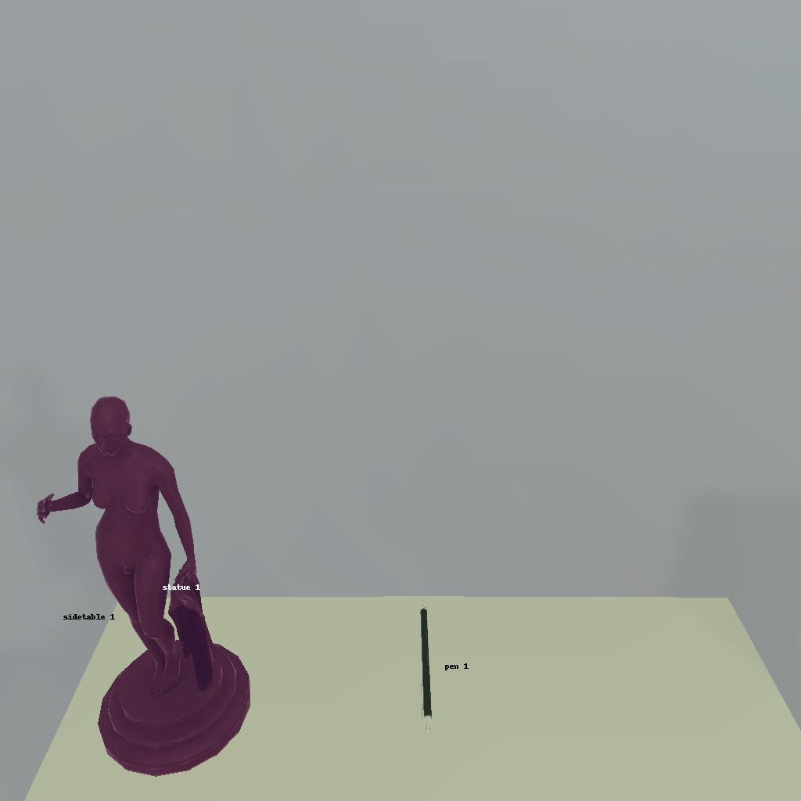
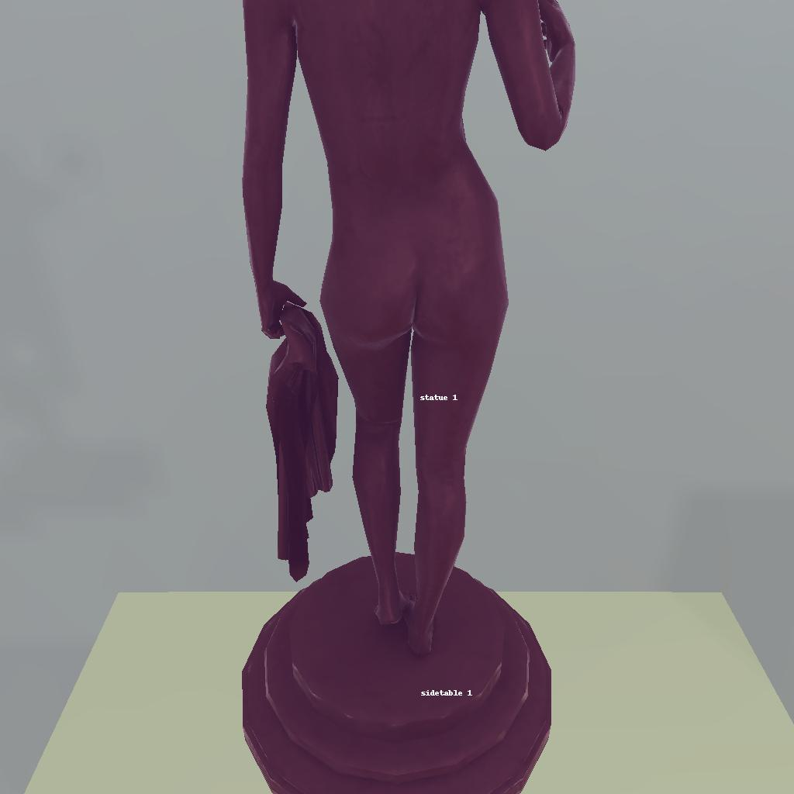

---------------------------------------------------------task: 4---------------------------------------------------------
--------------------------------------------------------------------------------------------------------------------------------------------------------------------
--------------------------------------------------------------------------------------------------------------------------------------------------------------------
Step:--------------------------------------------------------------------------4-------------------------------------------------------------------------------
----------------------------------------
VLM Prompt:
Image1:
Image2:
**Instruction**
1. Analyze the provided image to identify all visible household objects, focusing on those relevant to the task description "examine the statue with the floorlamp."
2. Use the analysis of the image and the task hint "The agent must find an object of the desired type, locate and turn on a light source with the desired object in-hand." to answer the question: what is the most reasonable action in the choices for the task description "examine the statue with the floorlamp"?
4. Decide and write the answer using the template: The answer is: (i): , where i is the real number. If there is no desired object in the image, search every place based on **Initial Observation** to find the object. And if no one is exactly correct, choose a similar answer.
**Initial Observation**
You are in the middle of a room. Looking quickly around you, you can see armchair (1), coffeetable (1-2), sidetable (1), garbagecan (1), drawer (1), sofa (1), diningtable (1)
**Answer Choices**
(1): go to armchair 1
(2): go to coffeetable 1
(3): go to garbagecan 1
(4): go to sofa 1
(5): go to coffeetable 2
(6): go to diningtable 1
(7): put statue 1 in/on sidetable 1
(8): examine statue 1
(9): examine sidetable 1
**Answer**
Let's think step by step by following the instructions.
----------------------------------------
----------------------------------------
Original Response:
First, we need to identify all visible household objects relevant to the task description "examine the statue with the floorlamp." Looking at the images provided, we can see a statue (statue 1) and a sidetable (sidetable 1). There is also a pen mentioned in image 1, but it's not relevant to the task at hand.
Now, using the task hint, we know that the agent must find an object of the desired type, locate and turn on a light source with the desired object in-hand. The "desired object" in this case would be the statue. There is no floorlamp visible in the images provided, which means the agent would have to search the room based on the initial observation to find it. The initial observation mentions a few household objects, but none of them are a floorlamp, so we can assume the floorlamp is in the room but not mentioned in the initial observation.
Considering the answer choices provided, none of them directly allow for the examination of the statue with the floorlamp since none involve finding or turning on a light source. However, the closest action that can lead towards completing the task would be to first have the statue in hand.
The answer is: (7): put statue 1 in/on sidetable 1.
This action gets the statue in hand, which is the first step towards finding a light source (floorlamp) and examining the statue with it. After this, the agent would likely need to find the floorlamp in the room, turn it on, and then examine the statue with the floorlamp.
----------------------------------------
----------------------------------------
>>> Refine Original VLM Response and Get Pure Action: put statue 1 in/on sidetable 1
----------------------------------------
-----------------------------------------------------------------
Running time: 11.411124467849731 seconds
Total Money: 1.8026200000000001
-----------------------------------------------------------------
-----------------------------------------------------------------
Text Observation:You put the statue 1 in/on the sidetable 1.
-----------------------------------------------------------------
UNSUCCEED